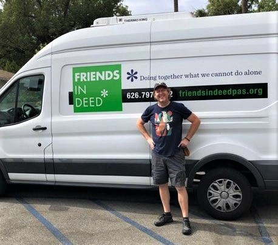
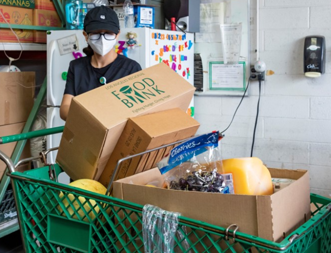
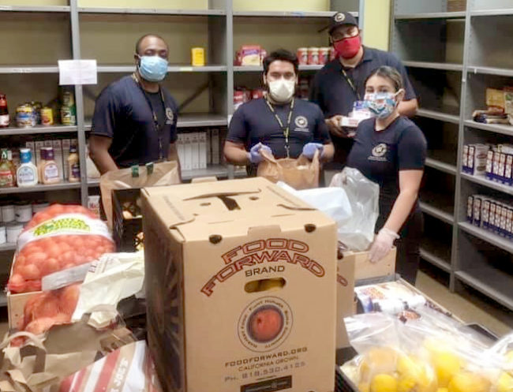

“Essential Giving” at Friends in Deed
Among the many lessons of 2020 is that community is of utmost importance and taking care of one another is the best definition of “essential.” The PCF COVID-19 Response Fund grantees are especially relying on community care and giving this year. With the winter holidays just around the corner, we spotlight how Friends in Deed…
Nourishing Our Neighbors for the Holidays
As the holiday season unfolds each year, nourishing food, gratitude, and community giving take center stage, and nowhere is this more evident than at charitable organizations addressing the food needs of Pasadena-area residents. This week we spotlight two of PCF’s recent 2020 COVID-19 Response Fund grantees, Union Station Homeless Services and Foothill Unity Center, to…
PCF awards $2.6 million in Grants in 2020
PCF understands that as coronavirus continues, many residents and organizations still struggle with meeting day-to-day needs — that’s why a new series of grants were recently distributed providing $460,000 to a range of organizations that serve disproportionately impacted communities with emergency assistance, such as access to technology, rent support, food, healthcare, and childcare. By the…